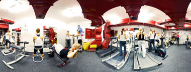

Teretana
Za sve one koje žele početi sa vežbanjem i zdravim životom formirali smo teretanu na Čukarici koja ce pruziti svim korisnicima adekvatne uslove za efikasan udoban i BEZBEDAN trening. Na raspolaganju stojimo sa nasim dugogodišnjim iskustvom kako na profesinalnim Sportskim takmičenjima tako i na edukaciji nasih članova-rekereativaca.

Sve sprave su proizvodi najpoznatijih proizvođača opreme za teretane: LifeFitness, TechnoGym i Panatta. Izrađene su od masivnih cevi vrlo su stabilne i pouzdane uz takođe vrlo impersivan izgled i udobnost pri radu na njima.
Za uspešan trening pored profesionalnih sprava i dobrih instruktora bitan je i prostor predviđen za svakog vežbača. Teretana - Čukarica je osmišljena tako da pruža i više nego dovoljno preporučenog prostora po vežbaču a optimizacijom broja članova i multipliciranjem istih sprava postali smo teretana u kojoj se vežba bez gužve i nepotrebnog čekanja.